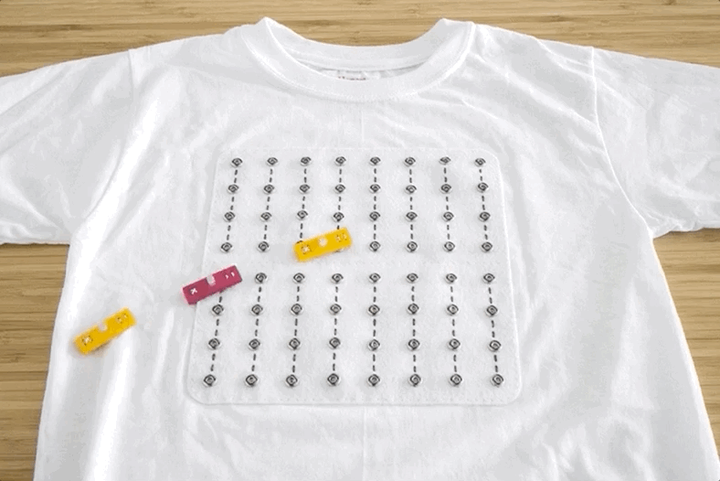
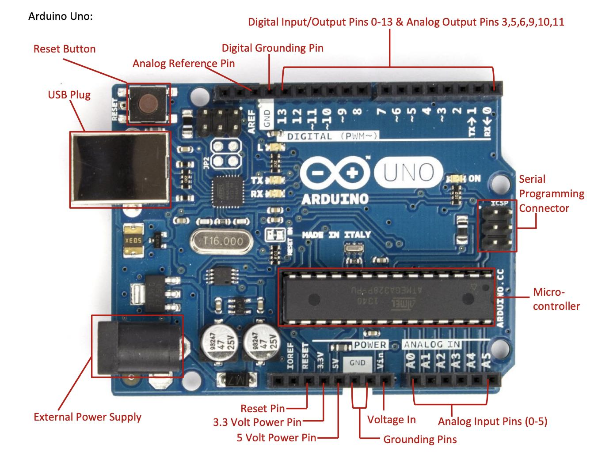
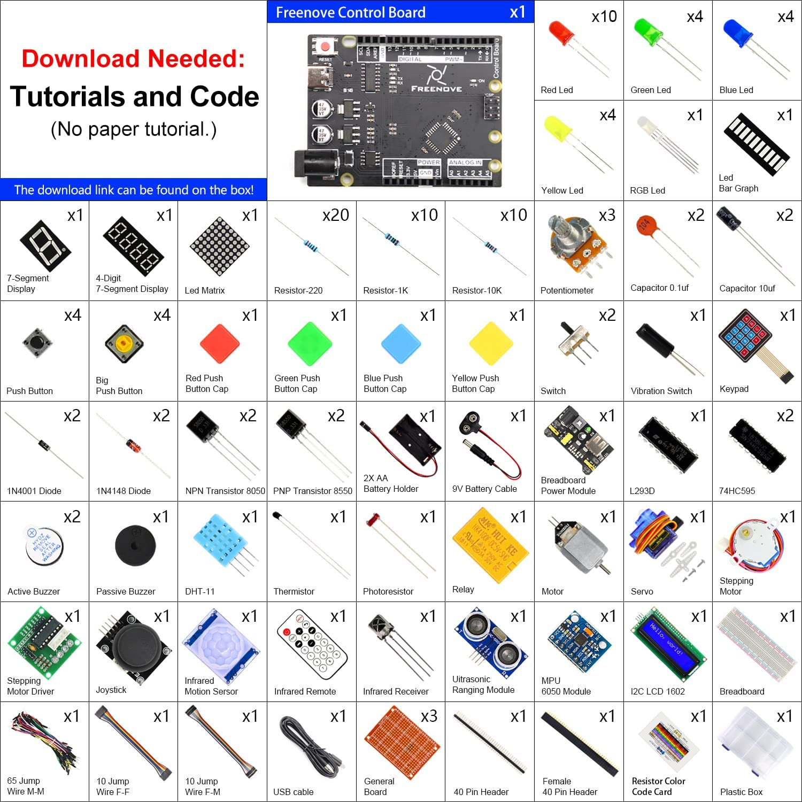

WEEK 7
Question
WOT IS PHYSICAL COMPUTING?
 link : https://zhuanlan.zhihu.com/p/365060027Physical computing is an approach to understanding the way humans interact with the digital world. It often involves creating interactive projects that use sensors and microcontrollers to translate analog inputs into digital outputs, or to control devices like motors and lights. This field intersects with electrical engineering, robotics, and computer science, and is used in education, art, and product design to create engaging, hands-on experiences.
WOT IS ARDUINO?
Arduino is an open-source electronics platform that combines easy-to-use hardware and software. Arduino boards can read inputs, like a finger on a button or a message on Twitter, and turn them into outputs, such as activating a motor or turning on an LED. You can program these boards using the Arduino programming language and the Arduino Software (IDE). It's widely used for prototyping, education, and creating interactive projects. Arduino has fostered a global community where people create, share, and learn about digital making.
WOT'S IN THE BOX?
PRACTICY
WOT'S IN THE BOX

We opened the box and took out the electronic components inside, placing them on a piece of paper and labeling their names. I recognized a few components, but most of them were unfamiliar to me. This activity introduced me to many new and fascinating components, such as the Ultrasonic Ranging Module. Initially, I thought it was a type of electronic component that emitted sound like a speaker, but I was surprised to learn that its function is actually ultrasonic ranging. This is very interesting.
PUSH-BUTTON LED

Components:
•Breadboard×1
•Arduino Uno R3×1
•jumper wires×4
•LED ×1
•resistor 220Ω×1
•Push-button or momentary switch×1
•3.3V Powersource ×1
In this activity, my group members and I constructed our first circuit in class. First, we downloaded the Arduino IDE and then connected the Arduino UNO to the computer.
Next, we proceeded to set up the circuit.
During the setup, we encountered a small issue where the LED did not light up. Upon inspection, we discovered that the positive and negative terminals of the LED were accidentally reversed.This circuit is not an Arduino circuit perse, just an led + resistor + power/ground.In this project, the LED is controlled by a push button switch, and the control board here only plays the role of power supply in the circuit.
LED BLINK

Components:
•Arduino Uno R3×1
•Breadboard x1
•USB cable x1
•Jumper M/M x2
•LED x1
•Resistor 220Ω x1
Unlike the previous project, in this project, we will make the LED blink. In order to make the LED blink, we need to alternate pin 13 of the control board between high and low output levels. By adjusting the delay data in the sketch code to control the duration of the voltage being high and low, we achieved the blinking of the LED. Initially, it didn't respond, but as we successfully adjusted the delay data for turning on and off in the code, the LED started blinking.
VCA INTERACIVE HEADSPACE ULTRASONIC BUZZER

Component:
•Arduino Uno R3×1
•USB cable x1
•Jumper F/M x4
•Ultrasonic ranging module x1
•Passive buzze×1
In this activity, We hooked the sensor up to a Piezzo buzzer, which acts as warning when objects are too close.We use the HC-SR04 communication protocol to operate the module, obtain the range of time, and calculate the distance.Passive buzze makes a sound depending on the distance from the object